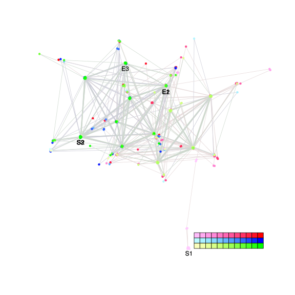
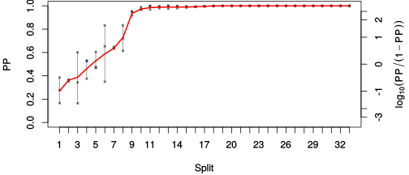
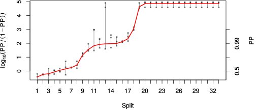

| chain # | burnin | subsample | Iterations (remaining) | command line | subdirectory | directory |
|---|---|---|---|---|---|---|
| 1 | 4325 | 1 | 95675 | bali-phy E1_AA_red3_selAll.fas -s 56349 -n selAll_c1 | selAll_c1-1 | /DATA/work/ONCOGENEVOL/database/trees/Bali-Phy/red3/E1 |
| 2 | 4325 | 1 | 83841 | bali-phy E1_AA_red3_selAll.fas -s 65454 -n selAll_c2 | selAll_c2-1 | /DATA/work/ONCOGENEVOL/database/trees/Bali-Phy/red3/E1 |
| 3 | 4325 | 1 | 38932 | bali-phy E1_AA_red3_selAll.fas -s 65454 -n selAll_c2 | selAll_c2-2 | /DATA/work/ONCOGENEVOL/database/trees/Bali-Phy/red3/E1 |
| P(data|M) = -34919.288 +- 2.131 | Complete sample: 563 topologies | 95% Bayesian credible interval: 174 topologies |

Phylogeny Distribution

| Partition support: Summary |
| Partition support graph: SVG |
| 50% consensus | Newick (+PP) | SVG | |||||
| 66% consensus | Newick (+PP) | SVG | |||||
| 80% consensus | Newick (+PP) | SVG | |||||
| 90% consensus | Newick (+PP) | SVG | |||||
| 95% consensus | Newick (+PP) | SVG | |||||
| 99% consensus | Newick (+PP) | SVG | |||||
| 100% consensus | Newick (+PP) | SVG | |||||
| MAP | Newick (+PP) | SVG | |||||
| greedy | Newick (+PP) | SVG |
{kind=link}
{kind=link}
{kind=link}
{kind=link}
{kind=link}
{kind=link}
{kind=link}
{kind=link}
Alignment Distribution
Partition 1
| Diff | Min. %identity | # Sites | Constant | Informative | ||||
|---|---|---|---|---|---|---|---|---|
| Initial | FASTA | HTML | Diff | 2.74% | 698 | 1 (0.143%) | 693 (99.3%) | |
| Best (WPD) | FASTA | HTML | AU | 20.4% | 1777 | 48 (2.7%) | 699 (39.3%) |


Mixing
| burnin (scalar) | ESS (scalar) | ESS (partition) | ASDSF | MSDSF | PSRF-CI80% | PSRF-RCF |
|---|---|---|---|---|---|---|
| 11667 | 38.03 | 8.922 | 0.029 | 0.244 | 1.021 | 1.073 |
Projection of RF distances for the first 3 chains3D | Variation of split PPs across chains |
Scalar variables
| Statistic | Median | 95% BCI | ACT | ESS | burnin | PSRF-CI80% | PSRF-RCF |
|---|---|---|---|---|---|---|---|
| prior | -3155 | (-3324, -2998) | 2255 | 96 | 11667 | 0.9992 | 1.07 |
| prior_A1 | -3287 | (-3453, -3129) | 2225 | 98 | 11667 | 0.9987 | 1.073 |
| likelihood | -3.479e+04 | (-3.49e+04, -3.468e+04) | 5744 | 38 | 1246 | 1.021 | 1.058 |
| logp | -3.795e+04 | (-3.806e+04, -3.784e+04) | 571.9 | 381 | 5888 | 0.993 | 1.02 |
| Heat.beta | 1 | ||||||
| Scale1 | 11.65 | (8.391, 15.55) | 1 | 218451 | 151 | 0.9996 | 1.001 |
| S1.F.pi.A | 0.07551 | (0.06978, 0.08137) | 49.39 | 4423 | 83 | 1.001 | 1.001 |
| S1.F.pi.R | 0.04668 | (0.0421, 0.05137) | 28.52 | 7660 | 566 | 1.003 | 0.9938 |
| S1.F.pi.N | 0.03657 | (0.03298, 0.04024) | 20.83 | 10486 | 682 | 1 | 0.9986 |
| S1.F.pi.D | 0.05813 | (0.05273, 0.0637) | 31.23 | 6995 | 423 | 1.002 | 0.9961 |
| S1.F.pi.C | 0.05444 | (0.04822, 0.06077) | 12.55 | 17405 | 484 | 0.998 | 1.007 |
| S1.F.pi.Q | 0.0432 | (0.03934, 0.04727) | 15.98 | 13667 | 89 | 1.003 | 0.9963 |
| S1.F.pi.E | 0.05395 | (0.04915, 0.05891) | 114 | 1915 | 131 | 1.005 | 0.9918 |
| S1.F.pi.G | 0.08214 | (0.07444, 0.08987) | 1266 | 172 | 214 | 1.012 | 0.995 |
| S1.F.pi.H | 0.02695 | (0.02363, 0.03041) | 10.41 | 20977 | 518 | 1 | 0.9988 |
| S1.F.pi.I | 0.04179 | (0.03746, 0.04637) | 8.466 | 25802 | 412 | 1 | 1.002 |
| S1.F.pi.L | 0.1 | (0.09243, 0.1078) | 11.09 | 19698 | 574 | 1.001 | 1.001 |
| S1.F.pi.K | 0.04038 | (0.0362, 0.04474) | 9.165 | 23835 | 181 | 1.002 | 0.9964 |
| S1.F.pi.M | 0.01961 | (0.01687, 0.02248) | 8.634 | 25302 | 576 | 0.9994 | 1.001 |
| S1.F.pi.F | 0.04444 | (0.03929, 0.04973) | 9.001 | 24268 | 613 | 0.9992 | 1.001 |
| S1.F.pi.P | 0.04555 | (0.04019, 0.05121) | 650.5 | 335 | 640 | 1 | 1.005 |
| S1.F.pi.S | 0.06649 | (0.06118, 0.07177) | 213.2 | 1024 | 537 | 1.001 | 1 |
| S1.F.pi.T | 0.06188 | (0.05686, 0.06702) | 28.72 | 7605 | 294 | 1.002 | 0.9978 |
| S1.F.pi.W | 0.008734 | (0.006326, 0.01135) | 8.108 | 26942 | 1005 | 0.9978 | 1.007 |
| S1.F.pi.Y | 0.02656 | (0.02279, 0.03045) | 9.712 | 22492 | 394 | 1.002 | 0.9955 |
| S1.F.pi.V | 0.06618 | (0.06063, 0.07185) | 18.24 | 11974 | 268 | 1 | 1.002 |
| I1.RS07.meanIndelLengthMinus1 | 3.768 | (3.178, 4.423) | 622.7 | 350 | 1248 | 0.9955 | 1.017 |
| I1.RS07.logLambda | -3.728 | (-3.854, -3.599) | 378.6 | 577 | 391 | 0.9975 | 1.015 |
| |A1| | 1592 | (1485, 1693) | 2668 | 81 | 9938 | 1.018 | 1.05 |
| #indels1 | 388 | (365, 412) | 1906 | 114 | 4167 | 0.9894 | 1.064 |
| |indels1| | 1858 | (1694, 2027) | 876.5 | 249 | 3725 | 0.9985 | 1.017 |
| #substs1 | 6550 | (6465, 6629) | 1773 | 123 | 658 | 0.9907 | 1.035 |
| Scale1*|T| | 13.6 | (13.21, 14) | 106.4 | 2053 | 218 | 0.9972 | 1.005 |
| |A| | 1592 | (1485, 1693) | 2668 | 81 | 9938 | 1.018 | 1.05 |
| #indels | 388 | (365, 412) | 1906 | 114 | 4167 | 0.9894 | 1.064 |
| |indels| | 1858 | (1694, 2027) | 876.5 | 249 | 3725 | 0.9985 | 1.017 |
| #substs | 6550 | (6465, 6629) | 1773 | 123 | 658 | 0.9907 | 1.035 |
| |T| | 1.168 | (0.8325, 1.539) | 1 | 218451 | 67 | 0.9996 | 1.001 |